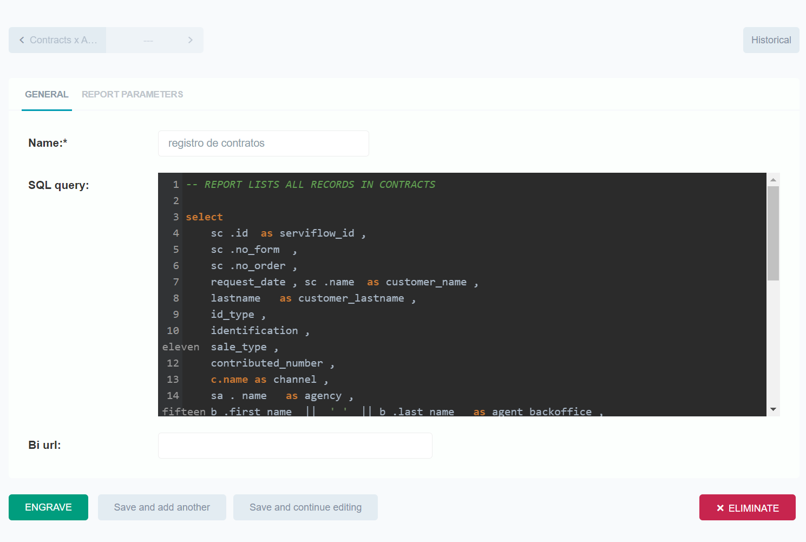
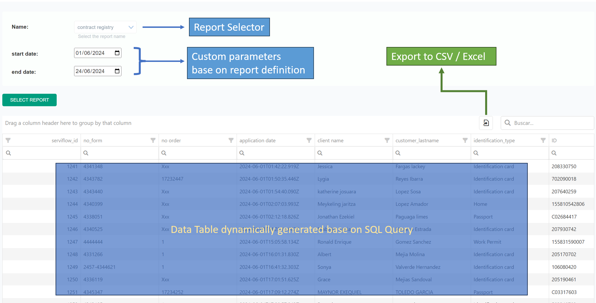

Project Overview
In many web applications, generating and displaying reports is a critical feature. Django, with its robust admin interface and powerful ORM, provides a convenient framework for implementing this functionality. This project explores how to leverage Django's admin site to generate and display reports, incorporating dynamic form handling and interactive data visualization.

Data Models
I start by defining two key models: Report and ReportParameter. Report stores the report information, including the SQL query or BI URL, and ReportParameter defines the parameters that can be used in the reports.
# models.py
from django.db import models
PARAMETER_TYPES = [
('text', 'Text'),
('integer', 'Integer'),
('decimal', 'Decimal'),
('date', 'Date'),
('boolean', 'Boolean'),
('choice_list', 'Choice List'),
('multiple_choice', 'Multiple Choice'),
('json', 'JSON or Dict'),
]
class ReportParameter(models.Model):
report = models.ForeignKey('Report', on_delete=models.CASCADE, related_name="parameters")
name = models.CharField(max_length=255)
type = models.CharField(max_length=50, choices=PARAMETER_TYPES)
required = models.BooleanField(default=False)
data = models.CharField(max_length=500, null=True, blank=True,
help_text="List of data to select from in case of choice list or multiple choice, " \
"use the convention app.model to generate data from an existing model")
def __str__(self):
return self.name
class Report(models.Model):
name = models.CharField(max_length=255)
sql_query = models.TextField(null=True, blank=True)
bi_url = models.URLField(null=True, blank=True)
def __str__(self):
return self.nameAdmin Configuration for Reports
Configure the Django admin to manage reports and their parameters:
# admin.py
from django.contrib import admin
from django.urls import path
from django.template.response import TemplateResponse
from django.utils.translation import gettext as _
from .models import Report, ReportParameter
from .forms import ShowReportForm
class ReportParameterInline(admin.TabularInline):
model = ReportParameter
extra = 0
class ReportAdmin(admin.ModelAdmin):
list_display = ('name',)
inlines = [ReportParameterInline]This configures the view and interaction with the Report model in the Django admin panel. list_display specifies which columns are visible in the list of reports, while inlines adds the ReportParameterInline for editing parameters within the same admin page.
Custom URLs and Views
Define custom URLs for specific actions within the admin:
def get_urls(self):
info = self.model._meta.app_label, self.model._meta.model_name
urls = super().get_urls()
custom_urls = [
path('select_report/', self.admin_site.admin_view(self.select_report), name='%s_%s_select_report' % info),
path('generate_report/', self.admin_site.admin_view(self.generate_report), name='%s_%s_generate_report' % info),
]
return custom_urls + urlsget_urls() allows defining custom URLs for specific actions within the admin. select_report and generate_report are views that handle selecting and generating reports respectively.
def construct_sql_query(self, original_sql_query, form_data):
from django.db import connection
parameters_in_sql = [parameter.split('@')[1] for parameter in original_sql_query.split() if '@' in parameter]
for parameter in parameters_in_sql:
original_sql_query = original_sql_query.replace(f"@{parameter}", f"%({parameter})s")
with connection.cursor() as cursor:
cursor.execute(original_sql_query, form_data)
results = cursor.fetchall()
headers = [column[0] for column in cursor.description]
results_with_headers = [dict(zip(headers, result)) for result in results]
return results_with_headers
def select_report(self, request):
from django.core.serializers.json import DjangoJSONEncoder
import json
context = {}
form_type = ShowReportForm
form = form_type(request.POST or None, request.FILES or None)
if request.POST and form.is_valid():
report = form.cleaned_data['name']
if report.bi_url:
context['uri_dashboard'] = report.bi_url
else:
result = self.construct_sql_query(report.sql_query, form.cleaned_data)
context['results'] = json.dumps(result, cls=DjangoJSONEncoder)
context['title'] = _("Report")
context['form'] = form
context['opts'] = self.model._meta
return TemplateResponse(request, "admin/report/select.html", context)Dynamic Form Generation with Parameter Inputs
In essence, ShowReportForm dynamically adapts to user-selected reports within the Django admin, facilitating flexible data input and retrieval processes. When coupled with select_report, it empowers administrators to manage and visualize dynamic reports seamlessly through the Django framework.
from django import forms
from .models import Report, ReportParameter
class ShowReportForm(forms.Form):
class Meta:
fields = ['name',]
def __init__(self, *args, **kwargs):
super(ShowReportForm, self).__init__(*args, **kwargs)
self.fields['name'] = forms.ModelChoiceField(
queryset=Report.objects.all(),
empty_label="Select the report name",
help_text="Select the name of the report",
)
if self.data and 'name' in self.fields:
parameters = ReportParameter.objects.filter(report=self.data.get('name'))
for parameter in parameters:
if parameter.type == 'text':
self.fields[parameter.name] = forms.CharField(label=parameter.name, required=parameter.required)
elif parameter.type == 'integer':
self.fields[parameter.name] = forms.IntegerField(label=parameter.name, required=parameter.required)
elif parameter.type == 'decimal':
self.fields[parameter.name] = forms.DecimalField(label=parameter.name, required=parameter.required)
elif parameter.type == 'date':
self.fields[parameter.name] = forms.DateField(label=parameter.name,
required=parameter.required,
widget=forms.DateInput(attrs={'type': 'date'}))
elif parameter.type == 'boolean':
self.fields[parameter.name] = forms.BooleanField(label=parameter.name)
elif parameter.type == 'option_list':
choices = self._get_choices_from_data(parameter.data)
self.fields[parameter.name] = forms.ChoiceField(
label=parameter.name,
choices=choices,
required=parameter.required
)
elif parameter.type == 'multiple_selection':
choices = self._get_choices_from_data(parameter.data)
self.fields[parameter.name] = forms.MultipleChoiceField(
label=parameter.name,
choices=choices,
required=parameter.required,
widget=forms.CheckboxSelectMultiple
)
def _get_choices_from_data(self, data):
from django.apps import apps
if data:
if '.' in data:
app_label, model_name = data.split('.')
model = apps.get_model(app_label, model_name)
choices = [(obj.pk, str(obj)) for obj in model.objects.all()]
else:
choices = [option.strip() for option in data.split(',')]
choices = [(option, option) for option in choices]
return choices
return []This integration ensures that administrators can efficiently handle complex reporting requirements while maintaining the simplicity and robustness of Django's admin interface.
Conclusion
Implementing report generation and display in Django leverages its powerful admin capabilities and flexible form handling. By customizing forms and integrating with Django's ORM, you can create dynamic and interactive reports that meet your application's needs.
In summary, this setup demonstrates how Django's admin site, custom forms, and template rendering can be used together effectively to manage and present reports within a web application. You can find more information about this project at: github.com/twine003/dynamic_report